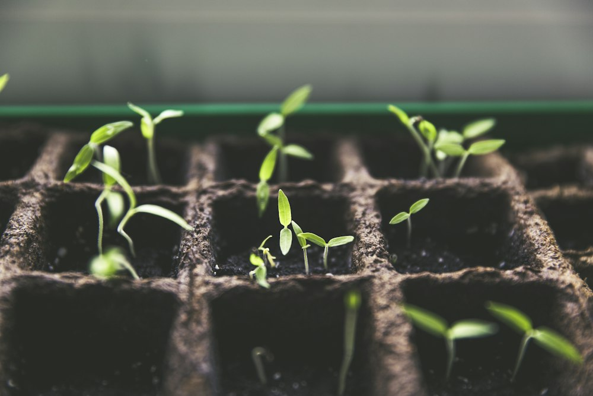
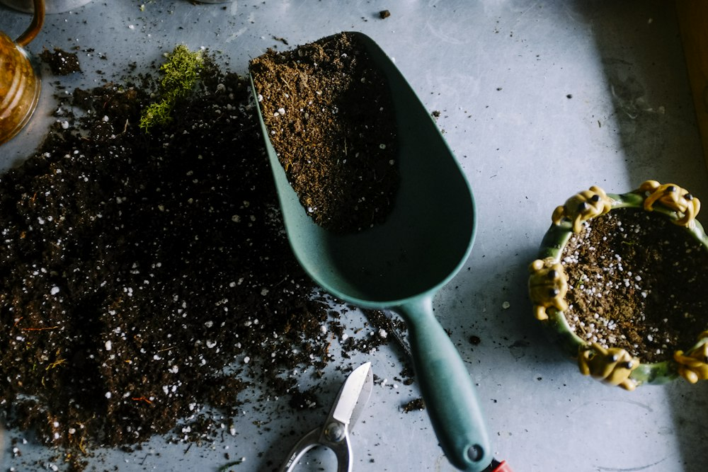

Garden design
Choose plants and a layout that suit the light, soil, and time you have.
How we plan a gardenGarden design & outdoor living
A good garden doesn't have to be complicated. It should suit your space, your seasons, and the way you like to spend time outdoors.
See what we can do
Start where you are
From a new planting plan to a place to sit outside, here's where a project could start.
Choose plants and a layout that suit the light, soil, and time you have.
How we plan a gardenMake space for a table, a few chairs, and the people you want around them.
See garden photosKeep beds tidy and plants healthy as the weather and seasons change.
About this websiteOut in the garden


Sample landscaping photos. Juniper is a made-up business, not a real contractor.
The Juniper way
01Walk around and talk about how you'd like to use the yard.
02Pick plants and materials that suit the space and your budget.
03Set a schedule and get to planting.
About this sample
Juniper Outdoor Co. is fictional, so this page can't arrange a garden visit. If you'd like a site for your business, I'd be happy to hear from you.
Contact William